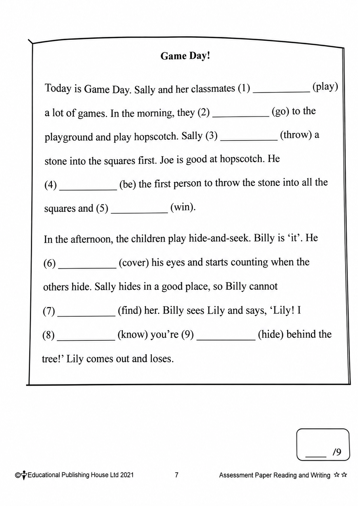
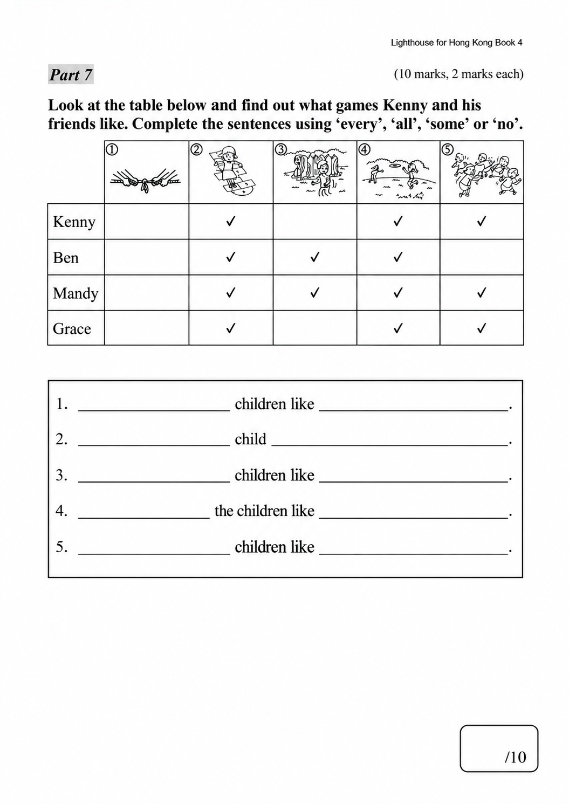

已掌握
| # | 中文意思 | 例句/提示 | 英文默写 | 已掌握 |
|---|---|---|---|---|
| noun 名词 | ||||
| 1 | 奶油 | I like on my cake. | ||
| 2 | 历史 | I like learning about . | ||
| 3 | 野餐 | We have a in the park. | ||
| 4 | 网站 | The school has news. | ||
| 5 | 教堂 | The old is quiet. | ||
| 6 | 机器人 | The can move. | ||
| 7 | 作家 | The writes stories. | ||
| 8 | 小学生 | The reads a book. | ||
| 9 | 楼层 | Our classroom is on the second . | ||
| verb 动词 | ||||
| 10 | 待在 | I at home on rainy days. | ||
| 11 | 喂养 | I my fish every day. | ||
| 12 | 收集 | I stamps. | ||
| 13 | 讨厌 | I noisy places. | ||
| 14 | 发送 | I will you a postcard. | ||
| 15 | 绘画 | I a picture. | ||
| phrase 短语 | ||||
| 16 | 校车 | We take the every morning. | ||
| adjective 形容词 | ||||
| 17 | 粗鲁的 | Do not be . | ||
| 18 | 礼貌的 | It is to say thank you. | ||
| 19 | 令人惊叹的；很棒的 | We watched an magic show. | ||
| pronoun 代词 | ||||
| 20 | 它们 | I can see in the garden. | ||
| # | 单词/词组 | 中文意思 | 例句/说明 | 已掌握 |
|---|---|---|---|---|
| adjective 形容词 | ||||
| 1 | enormous | The elephant is enormous. | ||
| 2 | excellent | Your work is excellent. | ||
| 3 | smart | The smart girl solved the puzzle. | ||
| 4 | false | The statement "A week has eight days" is false. | ||
| noun 名词 | ||||
| 5 | instruction | Read each instruction before you start the test. | ||
| 6 | webpage | This webpage has many pictures. | ||
| 7 | website | The school website has news. | ||
| 8 | bunny | The bunny eats a carrot. | ||
| 9 | content | This book has interesting content. | ||
| 10 | interviewer | The interviewer asks questions. | ||
| 11 | staff | The school staff are friendly. | ||
| 12 | adult | Ask an adult to help you cross the road. | ||
| 13 | environment | Let us all protect the environment and save the Earth! | ||
| 14 | air conditioner | We turn on the air conditioner when the room is very hot. | ||
| 15 | pear | I put a pear in my lunch box. | ||
| 16 | notice | Eric is reading a school notice. | ||
| 17 | preparation | We help with the preparation for the party. | ||
| 18 | bush | The kitten is hiding behind a bush. | ||
| noun phrase 名词短语 | ||||
| 19 | a hot dog | May I have a hot dog, please? | ||
| 20 | lemon tea | I'd like two cups of lemon tea, please. | ||
| 21 | a bowl | Put the egg into a bowl. | ||
| 22 | a towel | He gave her a towel. | ||
| 23 | a watch | I gave him a watch. | ||
| 24 | cup of hot chocolate | I would like a cup of hot chocolate. | ||
| verb 动词 | ||||
| 25 | roll | The ball can roll. | ||
| 26 | matter | It does not matter if we are a little late. | ||
| 27 | illustrate | The pictures illustrate the story. | ||
| verb phrase 动词短语 | ||||
| 28 | play the violin | He wants to learn to play the violin. | ||
| 29 | come from | Where does milk come from? | ||
| adverb 副词 | ||||
| 30 | off | This shirt is 40% off. The bird flew off. | ||
| # | 中文意思 | 例句/提示 | 英文默写 | 已掌握 |
|---|---|---|---|---|
| time/date 时间日期 | ||||
| 1 | 十月 | is the tenth month. | ||
| time unit 时间单位 | ||||
| 2 | 日 | A has 24 hours. | ||
| 3 | 时 | An has 60 minutes. | ||
| numbers 数字 | ||||
| 4 | 6 | is 6. | ||
| 5 | 10 | is 10. | ||
| 6 | 11 | is 11. | ||
| 7 | 13 | is 13. | ||
| 8 | 17 | is 17. | ||
| ordinal numbers 序数 | ||||
| 9 | 第二 | This is the shape. | ||
| solid shape 立体图形 | ||||
| 10 | 五棱锥 | A has one pentagonal base and five triangular side faces. | ||
| 11 | 圆柱 | A has two circular faces. | ||
| 12 | 面 | A cube has six . | ||
| 13 | 曲面 | A cylinder has a . | ||
| plane shape 平面图形 | ||||
| 14 | 长方形 | A has four right angles. | ||
| geometry 几何 | ||||
| 15 | 直角 | A is 90 degrees. | ||
| # | 单词/词组 | 中文意思 | 例句/说明 | 已掌握 |
|---|---|---|---|---|
| numbers 数字 | ||||
| 1 | approximate value | The approximate value of 198 to the nearest ten is 200. | ||
| operations 运算 | ||||
| 2 | total | Find the total number of apples. | ||
| 3 | carrying | Carrying helps when the ones make ten. | ||
| 4 | borrowing | Borrowing helps when we subtract. | ||
| geometry 几何 | ||||
| 5 | right angle | A right angle is 90 degrees. | ||
| 6 | perpendicular | Perpendicular lines meet at a right angle. | ||
| 7 | acute angle | An acute angle is smaller than a right angle. | ||
| question word 题目词 | ||||
| 8 | onwards | Count onwards from 20. | ||
| comparison 比较 | ||||
| 9 | more | 8 is more than 5. | ||
| 10 | most | Which group has the most? | ||
| 11 | heavier | A 3 kg bag is heavier than a 2 kg bag. | ||
| time/date 时间日期 | ||||
| 12 | leap year | A leap year has 366 days. | ||
| 13 | non-leap year | A non-leap year has 365 days. | ||
| quantity 数量 | ||||
| 14 | pair | A pair means two things together. | ||
| position 位置 | ||||
| 15 | behind | The bag is behind the chair. | ||
| 16 | front | The door is at the front of the room. | ||
| operations calculation 运算 | ||||
| 17 | difference | The difference is the answer in subtraction. | ||
| 18 | A times B | A times B means multiplication. | ||
| 19 | subtract A from B | "Subtract A from B" means B - A. | ||
| 20 | division | Division is the opposite of multiplication. | ||
| teacher math vocabulary 老师数学词汇 | ||||
| 21 | start | Start counting from ten. | ||
| measurement 测量 | ||||
| 22 | metre | A metre is 100 centimetres. | ||
| 23 | height | Measure the height of the box. | ||
| 24 | kilometer | One kilometer is 1,000 meters. | ||
| geometry tool 几何工具 | ||||
| 25 | geo-strip | A geo-strip can help make shapes. | ||
| 句型结构 | ||||
| 26 | Angle ... is larger than Angle ... | Angle A is larger than Angle B. | ||
| 27 | Angle ... is the largest. | Angle A is the largest. | ||
| 28 | ... is to the south of ... | The library is to the south of the shop. | ||
| plane shape 平面图形 | ||||
| 29 | leg | A leg of a trapezium is a non-parallel side. | ||
| 30 | isosceles trapezium | An isosceles trapezium has two equal legs. | ||

